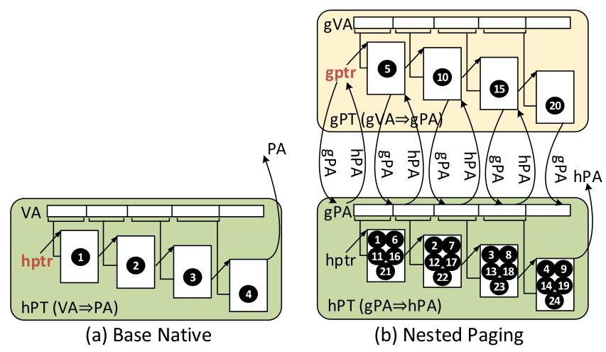
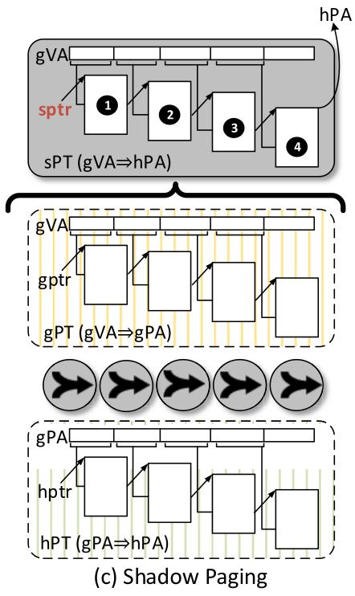
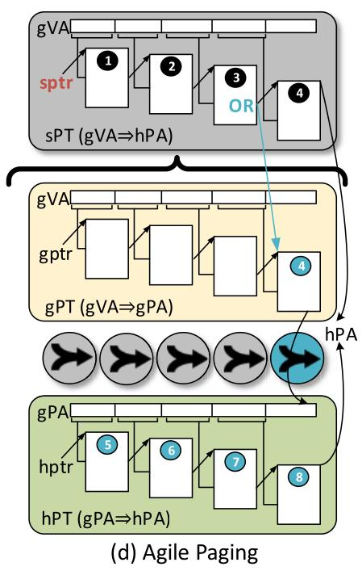
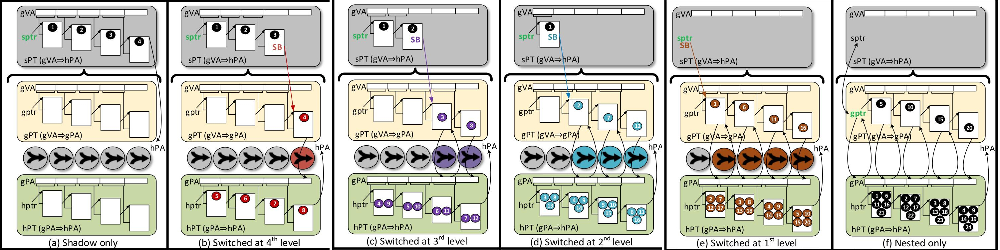

Agile Paging: Exceeding the Best of Nested and Shadow Paging
Jayneel Gandhi¹ Mark D. Hill¹ Michael M. Swift¹
¹University of Wisconsin-Madison
ISCA 2016
Challenge in Virtualized systems
Two levels of address translation
GVa -> GPa -> HPa
TLB misses are costly
Two techniques
Nested paging
Shadow paging
Nested paging
2 Dimensional page walk
Needs atmost
24
memory references during a page walk
Easier to update page table
Guest OS manages guest page table (gVA -> gPA)
VMM manages host page table (gPA -> hPA)
Nested paging 2D page walk

Shadow paging
1 Dimensional page walk
Needs atmost
4
memory references during a page walk
Page table updates requires VMM intervention (VMtrap)
Context switch also requires a VMtrap to decide which shadow page to use
VMM manages shadow page table (gVA -> hPA)
Shadow paging page walk

Agile paging
Key Intuition:
Leaf PTEs change more frequently than higher PTEs
Only some part of address space change dynamically
Key Idea:
Use both Nested paging and shadow paging
Shadow paging for fast page table walks for static pages
Nested paging for fast page table updates for dynamic pages
Agile paging
Start with Shadow page tables
Switch to Nested paging if required
Need to maintain Guest, Host and Shadow page tables
Agile paging page walk

Hardware mechanism
Uses a switching bit in every PTE
If set, the PTE holds hPA of next guest page table level
Needs architectural 3 page table pointer registers
Allows 6 different degrees of nesting
Different degrees of nesting

VMM mechanism
Updates shadow page table on every update to guest page table
Sets parts of guest table covered by shadow paging as read only
Causes VMTrap on writing to those pages
Rest of guest table has read write access
Policy: Shadow to Nested
Observation: Updates to page are bimodal
Either 1 update or many update (within a time period)
Trigger: Two writes to any level
Converts that level and level below it to nested mode
Policy: Nested to Shadow
Simple policy: Convert to shadow after fixed interval
Better policy: Switch non dynamic parts back into shadow paging
Use dirty bits of host page tables corresponding to guest page tables
Parent level converted before child level
Hardware Optmizations for Accessed and Dirty bits
Accessed and Dirty bits has to be set in all 3 tables
Causes a VMtrap (high latency)
Instead let hardware page walker do this, without a VMtrap
Hardware Optmizations for Context Switches
Context switch cause a VMtrap when writing to guest page table pointer
VMM updates the shadow page table pointer
Use a small H/W structure
Stores corresponding Shadow page table pointers for guest page table pointers
Evaluations
Modified Linux 3.12.13 and KVM
Benchmarks from Spec 2006, Parsec, Biobench, memcached, graph500
Use Badgertrap
Use Linear performance model using performance counters
Results
Shadow paging is generally better than nested paging
Sometimes worse due to VMM interruptions
Agile paging performs better than both
More than 80% is covered by shadow mode
On Average makes 4-5 memory accesses on TLB miss